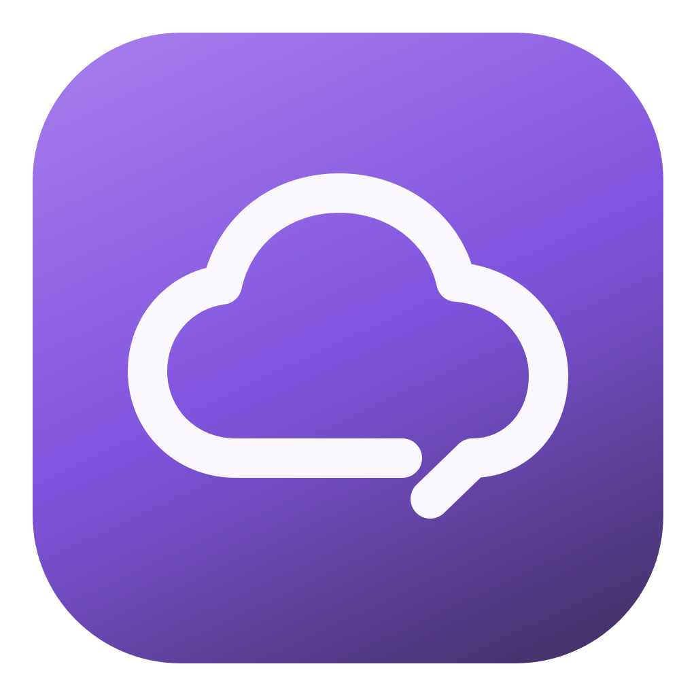

Не удалось подключиться к VK Мессенджеру
Проверьте подключение к интернету.
Ваш вход сохранён — приложение попробует снова автоматически.

Проверьте подключение к интернету.
Ваш вход сохранён — приложение попробует снова автоматически.